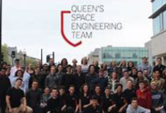
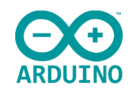
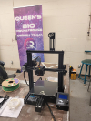

Brandon Chung
Projects
These are some of my most notable projects I've worked on the past few years both individually and collaboratively.
Queen's Space Engineering Team
 I engineered and modeled optimal lander design using SolidWorks, improved aerodynamics, reduced dead load by 15%, and improved yield strength by 17%. Analyzed data from NASA and MIT rover experiments to implement new material selection proven to be lighter and stronger while following budget plans. Developed additional lander features and accessories such as foldable legs for easy store-away and workability. Conducted multiple stress stain simulations on SolidWorks under real-life conditions and loads.
Conference on Industry and Resources: Queen's Engineering
 Raised over $6,000 from sponsorships enabling CIRQUE to further expand conference outreach. Developed marketing strategies that led to an 18% increase in delegates from 2019 by leveraging media platforms such as LinkedIn, Instagram, and Facebook to increase conference exposure.
Raised over $6,000 from sponsorships enabling CIRQUE to further expand conference outreach. Developed marketing strategies that led to an 18% increase in delegates from 2019 by leveraging media platforms such as LinkedIn, Instagram, and Facebook to increase conference exposure.
Bone Scaffold 3D Design
 Designed and modeled a bone scaffold adhering to strict constraint criteria for a 12-year-old. Conducted multiple stress-strain simulations on SolidWorks and 3D printed the most effective design iteration. The final design was 35% stronger than the initial design iteration. Analyzed a real-life stress-strain simulation using the Bionix Servohydraulic Test System on the 3D model.
Designed and modeled a bone scaffold adhering to strict constraint criteria for a 12-year-old. Conducted multiple stress-strain simulations on SolidWorks and 3D printed the most effective design iteration. The final design was 35% stronger than the initial design iteration. Analyzed a real-life stress-strain simulation using the Bionix Servohydraulic Test System on the 3D model.
Arduino UNO BMP 280 Sensor
Designed a program using C++ that behaved like a smart LED light bulb that recognized the illumination of the environment causing the light bulb to be dimmer or brighter. Created a thermostat that detected the pressure and temperature using the BMP 280 application. Conducted stress stain analysis using load cells and strain gauges connected to the Arduino. Experimented with bridge circuits that detect and combine small resistance changes to produce a small differential voltage. Analyzed the effects and applications of bridge circuits.
Queen's Biomechatronic Team
 As the director of finance at the Queen's Biomechatronic team I helped raise and delegate capital within the team. I collaboratively worked with team members to devise a new sponsorship package and I also helped assemble the team's 3D printer!
Earthquake Resistant Structure
 Designed an earthquake-resistant building collaboratively problem solving in a team of 5. The building was given the constraints to comply with Indonesian building codes and designed using only local and sustainable resources. Conducted multiple stress stain simulations on SolidWorks under real-life earthquake conditions.
Designed an earthquake-resistant building collaboratively problem solving in a team of 5. The building was given the constraints to comply with Indonesian building codes and designed using only local and sustainable resources. Conducted multiple stress stain simulations on SolidWorks under real-life earthquake conditions.
Queens University Algorithmic Network & Trading Team
Led the QUANTT Team with strategic capital delegation, connecting keynote speakers, and ensuring a successful conference. Managed and directed the hiring process for all QUANTT general members. Developed algorithms for the trading team to track market trends to determine the most effective buy/sell point based on the user's risk tolerance.